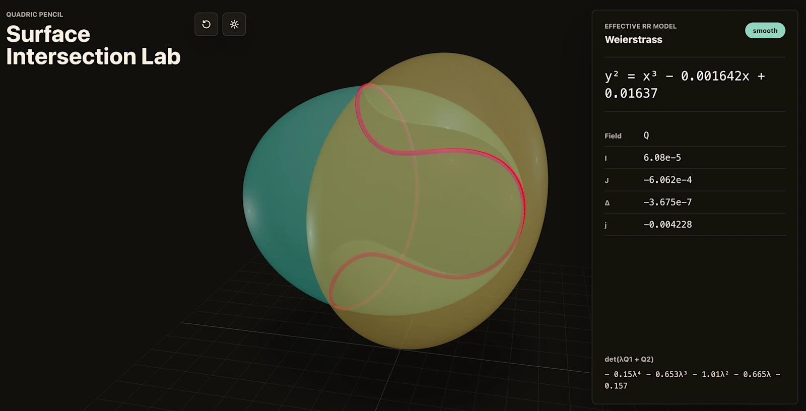

TL;DR — 2026-04-23 OpenAI가 GPT-5.5를 공개했다. GPT-5.4 대비 같은 토큰당 지연시간을 유지하면서 Terminal-Bench 2.0 82.7%, GDPval 84.9%, ARC-AGI-2 85.0%로 도약했다. Codex에서 같은 과제를 더 적은 토큰으로 풀고, 자신이 돌아가는 GB200 스케줄링 휴리스틱을 직접 개선해 토큰 생성 속도를 20%+ 끌어올렸다. API는 1M 컨텍스트에
$5 / $30(입력/출력), Pro는$30 / $180. 사이버보안은 Preparedness Framework에서 High로 승격.
1. 출시 개요
- 공개일: 2026-04-23 (GPT-5.4 출시 후 6주 만의 속도)
- 모델:
GPT-5.5,GPT-5.5 Pro, 그리고 Codex 전용Fast mode - 롤아웃: ChatGPT Plus/Pro/Business/Enterprise + Codex에 즉시. API는 “곧” 공개
- 컨텍스트: Codex 400K, API 1M
- 안전 검토: 전 Preparedness 프레임워크 통과 + 외부 레드팀 + 약 200개 파트너 조기 접근
OpenAI는 이 모델을 단일 기능 업데이트가 아니라 *“컴퓨터로 일하는 방식 자체를 바꾸는 한 발”*로 포지셔닝했다. 핵심 메시지는 세 가지다. 첫째, 사용자가 단계별 지시 없이 지저분한 멀티파트 과제를 통으로 넘겨도 모델이 계획-도구사용-자체검증-모호성탐색을 스스로 이어간다. 둘째, 같은 과제를 GPT-5.4보다 더 적은 토큰으로 해결한다. 셋째, 보안 능력이 올라간 만큼 기본 차단도 세졌고, 인증된 방어 업무에는 chatgpt.com/cyber로 별도 풀어준다.
2. 에이전틱 코딩
2.1 코딩 벤치마크 종합
| 벤치마크 | GPT-5.5 | GPT-5.4 | GPT-5.5 Pro | GPT-5.4 Pro | Claude Opus 4.7 | Gemini 3.1 Pro |
|---|---|---|---|---|---|---|
| SWE-Bench Pro (Public)* | 58.6% | 57.7% | – | – | 64.3% | 54.2% |
| Terminal-Bench 2.0 | 82.7% | 75.1% | – | – | 69.4% | 68.5% |
| Expert-SWE (Internal) | 73.1% | 68.5% | – | – | – | – |
* Opus 4.7 관련해서는 메모리제이션 증거가 보고되어 있다는 주석이 원문에 붙어 있다.
Expert-SWE는 OpenAI 내부 프론티어 평가로, 사람이 푸는 데 중앙값 20시간 걸리는 장기 코딩 과제다. GPT-5.5는 세 벤치 모두에서 GPT-5.4를 앞서면서 토큰을 더 적게 쓴다.
2.2 초기 테스터 인용
“The first coding model I’ve used that has serious conceptual clarity.”
— Dan Shipper, Founder and CEO, Every
Shipper는 자사 앱 론치 후 디버깅이 막혀 시니어 엔지니어가 시스템 일부를 재작성한 과거 상황을 재현했다. GPT-5.5에게 망가진 초기 상태만 건넸더니, 인간 엔지니어가 며칠 끝에 도달한 것과 같은 방향의 재작성을 뽑아냈다. GPT-5.4는 실패했던 과제다.
“It genuinely feels like I’m working with a higher intelligence, and there’s almost a sense of respect.”
— Pietro Schirano, CEO, MagicPath
MagicPath 사례는 수백 개 프론트엔드·리팩터 커밋이 쌓인 브랜치를 동시에 크게 바뀐 main으로 병합하는 작업이었다. GPT-5.5는 약 20분 만에 한 번에 해결했다.
한편 NVIDIA의 한 엔지니어는 “Losing access to GPT-5.5 feels like I’ve had a limb amputated.”(GPT-5.5 접근이 끊기는 것은 팔다리 하나를 잃은 기분)라고 표현했다.
“GPT-5.5 is noticeably smarter and more persistent than GPT-5.4, with stronger coding performance and more reliable tool use.”
— Michael Truell, Co-founder & CEO, Cursor
공식 소개 페이지에는 Cursor / Lovable / Cognition / Windsurf / GitHub / JetBrains / Sonar 로고가 초기 파트너로 나란히 걸렸다.
3. 지식 업무
3.1 지식 업무 벤치마크
| 벤치마크 | GPT-5.5 | GPT-5.4 | GPT-5.5 Pro | GPT-5.4 Pro | Claude Opus 4.7 | Gemini 3.1 Pro |
|---|---|---|---|---|---|---|
| GDPval (wins or ties) | 84.9% | 83.0% | 82.3% | 82.0% | 80.3% | 67.3% |
| FinanceAgent v1.1 | 60.0% | 56.0% | – | 61.5% | 64.4% | 59.7% |
| Investment Banking Modeling (Internal) | 88.5% | 87.3% | 88.6% | 83.6% | – | – |
| OfficeQA Pro | 54.1% | 53.2% | – | – | 43.6% | 18.1% |
GDPval은 44개 직무에 걸친 지식 업무 산출물 품질 벤치다. 84.9%는 OpenAI가 자기 동급 모델 포함 모든 경쟁 모델을 앞선 수치다.
3.2 OpenAI 내부 적용 사례
OpenAI는 85% 이상의 사내 직원이 주간 Codex를 쓰고 있다고 공개하며 세 가지 실사례를 인용했다.
- 커뮤니케이션팀: 6개월치 강연 요청 데이터를 GPT-5.5에 넣어 스코어링+리스크 프레임워크를 만들고, 저리스크 요청은 Slack 에이전트가 자동 처리하도록 검증했다.
- 재무팀: **K-1 세무서류 24,771건(71,637페이지)**을 개인정보 제외 워크플로로 리뷰해 작년 대비 2주 단축.
- Go-to-Market팀: 한 직원이 주간 비즈니스 리포트를 자동화해 주당 5~10시간 절감.
3.3 ChatGPT 내 신규 모드
- GPT-5.5 Thinking — Plus/Pro/Business/Enterprise 전원에게 열림. 더 짧고 정확한 답을 지향.
- GPT-5.5 Pro — Pro/Business/Enterprise 한정. 비즈니스·법률·교육·데이터사이언스 영역에서 GPT-5.4 Pro 대비 “응답 포괄성·구조·정확성·연관성·유용성”이 모두 유의미하게 상승했다고 조기 테스터들이 응답.
4. 과학 연구
4.1 학술·과학 벤치마크
| 벤치마크 | GPT-5.5 | GPT-5.4 | GPT-5.5 Pro | GPT-5.4 Pro | Claude Opus 4.7 | Gemini 3.1 Pro |
|---|---|---|---|---|---|---|
| GeneBench | 25.0% | 19.0% | 33.2% | 25.6% | – | – |
| FrontierMath Tier 1–3 | 51.7% | 47.6% | 52.4% | 50.0% | 43.8% | 36.9% |
| FrontierMath Tier 4 | 35.4% | 27.1% | 39.6% | 38.0% | 22.9% | 16.7% |
| BixBench | 80.5% | 74.0% | – | – | – | – |
| GPQA Diamond | 93.6% | 92.8% | – | 94.4% | 94.2% | 94.3% |
| Humanity’s Last Exam (no tools) | 41.4% | 39.8% | 43.1% | 42.7% | 46.9% | 44.4% |
| Humanity’s Last Exam (with tools) | 52.2% | 52.1% | 57.2% | 58.7% | 54.7% | 51.4% |
4.2 실제 연구 사례
- Ramsey number 신규 증명. 커스텀 하네스를 장착한 내부 GPT-5.5가 조합론에서 오래된 off-diagonal Ramsey 수의 점근 성질에 대한 증명을 찾아냈고, Lean으로 검증까지 완료됐다. 프리프린트 PDF.
- 유전체 분석. 잭슨 연구소 면역학 교수 Derya Unutmaz는 GPT-5.5 Pro로 62개 샘플 × 약 28,000 유전자 데이터셋을 분석해 팀이 몇 달 걸릴 리포트를 하루 만에 받았다고 전했다. GeneBench 자체는 벤치마크 문서가 공개되어 있다.
- 11분 만의 대수기하학 웹앱. 폴란드 Adam Mickiewicz University의 수학자 Bartosz Naskręcki는 프롬프트 한 번으로 두 이차곡면의 교차곡선을 빨간색으로 렌더링하고, 리만-로흐 정리로 Weierstrass 모델로 변환하는 웹앱을 11분에 빌드했다. 이후 특이점 시각화와 정확 계수 기능까지 확장.

“If OpenAI keeps cooking like this, the foundations of drug discovery will change by the end of the year.”
— Brandon White, Co-Founder & CEO, Axiom Bio
5. 도구 사용
| 벤치마크 | GPT-5.5 | GPT-5.4 | GPT-5.5 Pro | GPT-5.4 Pro | Claude Opus 4.7 | Gemini 3.1 Pro |
|---|---|---|---|---|---|---|
| BrowseComp | 84.4% | 82.7% | 90.1% | 89.3% | 79.3% | 85.9% |
| MCP Atlas** | 75.3% | 70.6% | – | – | 79.1% | 78.2% |
| Toolathlon | 55.6% | 54.6% | – | – | – | 48.8% |
| Tau2-bench Telecom (original prompts)*** | 98.0% | 92.8% | – | – | – | – |
** MCP Atlas: Scale AI의 2026-04 업데이트 이후 결과.
*** Tau2-bench Telecom은 프롬프트 튜닝 없이 실행(GPT-4.1을 user model로 사용). 타사 점수는 프롬프트 튜닝 적용 버전이라 생략.
**Tau2-bench Telecom 98.0%**는 복합 고객응대 워크플로에서 사실상 천장을 친 수치다. BrowseComp는 Pro 버전에서 90.1%로 Gemini 3.1 Pro(85.9%)와 Opus 4.7(79.3%)을 모두 앞섰다.
6. 컴퓨터 사용 / 비전
| 벤치마크 | GPT-5.5 | GPT-5.4 | GPT-5.5 Pro | GPT-5.4 Pro | Claude Opus 4.7 | Gemini 3.1 Pro |
|---|---|---|---|---|---|---|
| OSWorld-Verified | 78.7% | 75.0% | – | – | 78.0% | – |
| MMMU Pro (no tools) | 81.2% | 81.2% | – | – | – | 80.5% |
| MMMU Pro (with tools) | 83.2% | 82.1% | – | – | – | – |
OSWorld-Verified는 실제 OS 환경에서 에이전트가 스스로 앱을 조작하는 능력을 측정한다. 78.7%는 “화면 보고 클릭해서 일 끝낸다”는 에이전트 그림이 현실 수치로 들어온 신호다.
7. 사이버보안
| 벤치마크 | GPT-5.5 | GPT-5.4 | Claude Opus 4.7 |
|---|---|---|---|
| Capture-the-Flags challenge tasks (Internal)**** | 88.1% | 83.7% | – |
| CyberGym | 81.8% | 79.0% | 73.1% |
**** 시스템 카드에 쓰던 기존 CTF를 더 어려운 과제로 확장한 세트.
OpenAI는 GPT-5.5의 바이오/화학 및 사이버 능력을 Preparedness Framework상 High로 분류했다. Critical까지는 아직 아니지만 GPT-5.4 대비 한 단계 높다. 결과:
- 기본 ChatGPT에서 사이버 관련 요청에 더 빡센 분류기가 작동. 초기에는 거절이 늘 수 있음.
- 인증된 방어 업무는
chatgpt.com/cyber에서 Trusted Access로 풀어줌.GPT-5.4-Cyber등 permissive 모델도 심사된 인프라 방어 조직에 제공. - 시스템 카드: deploymentsafety.openai.com/gpt-5-5.
8. 장기 컨텍스트
| 벤치마크 | GPT-5.5 | GPT-5.4 | Claude Opus 4.7 |
|---|---|---|---|
| Graphwalks BFS 256k f1 | 73.7% | 62.5% | 76.9% |
| Graphwalks BFS 1mil f1 | 45.4% | 9.4% | 41.2% (Opus 4.6) |
| Graphwalks parents 256k f1 | 90.1% | 82.8% | 93.6% |
| Graphwalks parents 1mil f1 | 58.5% | 44.4% | 72.0% (Opus 4.6) |
| OpenAI MRCR v2 8-needle 4K–8K | 98.1% | 97.3% | – |
| OpenAI MRCR v2 8-needle 8K–16K | 93.0% | 91.4% | – |
| OpenAI MRCR v2 8-needle 16K–32K | 96.5% | 97.2% | – |
| OpenAI MRCR v2 8-needle 32K–64K | 90.0% | 90.5% | – |
| OpenAI MRCR v2 8-needle 64K–128K | 83.1% | 86.0% | – |
| OpenAI MRCR v2 8-needle 128K–256K | 87.5% | 79.3% | 59.2% |
| OpenAI MRCR v2 8-needle 256K–512K | 81.5% | 57.5% | – |
| OpenAI MRCR v2 8-needle 512K–1M | 74.0% | 36.6% | 32.2% |
핵심 포인트: 16K128K 구간에서는 GPT-5.4가 미세하게 앞서지만, 128K 이상에서 격차가 급격히 벌어진다. 512K1M 구간에서 GPT-5.5 74.0% vs GPT-5.4 36.6% — 두 배 차이. 1M 컨텍스트가 “이름만 지원”이 아니라 “실제로 쓸만한 수준”이 됐다는 얘기다.
9. 추상 추론
| 벤치마크 | GPT-5.5 | GPT-5.4 | GPT-5.4 Pro | Claude Opus 4.7 | Gemini 3.1 Pro |
|---|---|---|---|---|---|
| ARC-AGI-1 (Verified) | 95.0% | 93.7% | 94.5% | 93.5% | 98.0% |
| ARC-AGI-2 (Verified) | 85.0% | 73.3% | 83.3% | 75.8% | 77.1% |
ARC-AGI-2에서 GPT-5.4 대비 11.7%p 점프. Gemini 3.1 Pro는 ARC-AGI-1에서 여전히 선두지만, 더 어려운 ARC-AGI-2에서는 GPT-5.5가 확실히 앞선다.
본 평가들은 reasoning effort를
xhigh로 설정해 연구 환경에서 수행됐다. 프로덕션 ChatGPT 응답과 미세하게 다를 수 있다.
10. 추론 효율 / 서빙 인프라
GPT-5.5는 NVIDIA GB200 및 GB300 NVL72 시스템 위에서 co-design, co-trained, co-served됐다. 주목할 점은 Codex와 GPT-5.5 자체가 자기 서빙 인프라 최적화에 직접 투입됐다는 사실이다.
구체적 사례: 로드 밸런싱 휴리스틱
- 이전: 요청을 고정 수의 청크로 분할해 가속기 코어에 균등 분배.
- 문제: 트래픽 모양에 따라 고정 청크가 비효율.
- 해결: Codex가 몇 주치 프로덕션 트래픽 패턴을 분석해 동적 청크/파티셔닝 휴리스틱을 작성.
- 결과: 토큰 생성 속도 20%+ 향상.
즉, 모델이 자기를 돌리는 인프라를 자기가 개선하는 self-improving 루프가 프로덕션 레벨에서 돌기 시작했다.
“Built and served on NVIDIA GB200 NVL72 systems, the model enables our teams to ship end-to-end features from natural language prompts, cut debug time from days to hours, and turn weeks of experimentation into overnight progress in complex codebases.”
— Justin Boitano, VP of Enterprise AI, NVIDIA
11. 가격 / 롤아웃
11.1 ChatGPT
| 티어 | GPT-5.5 | GPT-5.5 Thinking | GPT-5.5 Pro |
|---|---|---|---|
| Plus | ✅ | ✅ | – |
| Pro | ✅ | ✅ | ✅ |
| Business | ✅ | ✅ | ✅ |
| Enterprise | ✅ | ✅ | ✅ |
11.2 Codex
- Plus / Pro / Business / Enterprise / Edu / Go 전 플랜 지원
- 400K 컨텍스트
- Fast mode — 토큰 생성 1.5배, 비용 2.5배
11.3 API (곧 공개)
| 모델 | 입력 (1M) | 출력 (1M) | 컨텍스트 |
|---|---|---|---|
| gpt-5.5 | $5 | $30 | 1M |
| gpt-5.5-pro | $30 | $180 | 1M |
- Batch / Flex: 표준 요금의 50%
- Priority: 표준 요금의 2.5배
- GPT-5.5는 GPT-5.4보다 단가는 높지만 토큰 소비가 줄어 실사용 비용은 대부분 케이스에서 동등하거나 하락
12. 오픈클로 관점 해석
오픈클로(OpenClaw) 같은 멀티 프로바이더 하네스에서 이번 릴리즈의 실질적 함의는 네 가지로 정리된다.
- 라우팅 기본값이 흔들린다. 입력 단가 기준 GPT-5.5는 Opus 4.7의 1/3, 출력은 약 40%. 코딩·툴 사용에서 Opus 4.7과 거의 붙거나 앞서기 때문에
executor=GPT-5.5,reviewer=Opus 4.7교차 검증이 비용-결과 최강 조합이 된다. - 장기 컨텍스트 대형화 워크로드가 본격 오픈. MRCR 512K~1M 구간에서 GPT-5.4 대비 두 배 성능. 전체 리포지토리 또는 수십 MB 로그를 한 번에 읽히는 RAG-less 흐름이 현실적으로 동작한다.
- Codex Fast + 병렬 서브에이전트가 가성비 극대화 지점.
team/subagents패턴으로 20시간짜리 Expert-SWE 급 과제를 밤새 분할 실행할 때, Fast mode(1.5× 속도, 2.5× 비용)가 “plan은 Pro, work는 Fast”라는 라우팅을 자연스럽게 만든다. - High 분류가 인증 루트를 필수화한다. 공격적 보안 업무는
chatgpt.com/cyberTrusted Access 없이 기본 ChatGPT에서 자주 거절된다. 방어 업무 자동화 설계는 인증 게이팅을 전제로 다시 그려야 한다.
이런 멀티 모델 조합을 한 줄짜리 커맨드로 돌리는 실전 레시피 50가지를 정리한 책이 있다. 블 크의 『이게 되네? 오픈클로 미친 활용법 50제』 (교보문고)다. ChatGPT · Claude · Gemini를 오픈클로 하네스 한 곳에서 plan → work → review로 묶어 돌리는 구성이 중심이며, GPT-5.5 투입 직후인 지금 라우팅 예제를 그대로 오늘 자 가격표에 꽂아 넣을 수 있다.
13. 결론
GPT-5.5는 모델 능력의 질적 점프라기보다 경제성과 지속성의 점프다. 벤치상으로는 1~2%p 차이처럼 보이지만, 핵심은 세 가지다.
- 같은 지연시간으로 한 단계 위 지능
- 같은 과제를 더 적은 토큰으로
- 자기 서빙 인프라까지 스스로 최적화
여기에 사이버보안 High 분류라는 새 제약이 더해졌다. Plus 사용자는 “똑똑해졌는데 거절도 늘었다”로 체감할 가능성이 있고, 방어 업무 수행자는 Trusted Access 루트를 반드시 확보해야 한다.
멀티 모델 라우터로 이 모델을 끼워 넣는다면, 기본 executor를 GPT-5.5로 갈아끼우고 reviewer/critic을 Opus 4.7로 두는 조합이 오늘 기준 비용 대비 결과가 가장 센 구성이 된다.
참고
- 원문: Introducing GPT-5.5 — OpenAI
- 공식 영상: Introducing GPT-5.5 (YouTube)
- 시스템 카드: deploymentsafety.openai.com/gpt-5-5
- Preparedness Framework v2: PDF
- GeneBench 벤치마크: PDF
- Ramsey number 증명: PDF
- BixBench: arXiv:2503.00096
- Artificial Analysis Intelligence Index: 방법론
- 오픈클로 책: 『이게 되네? 오픈클로 미친 활용법 50제』 (교보문고)